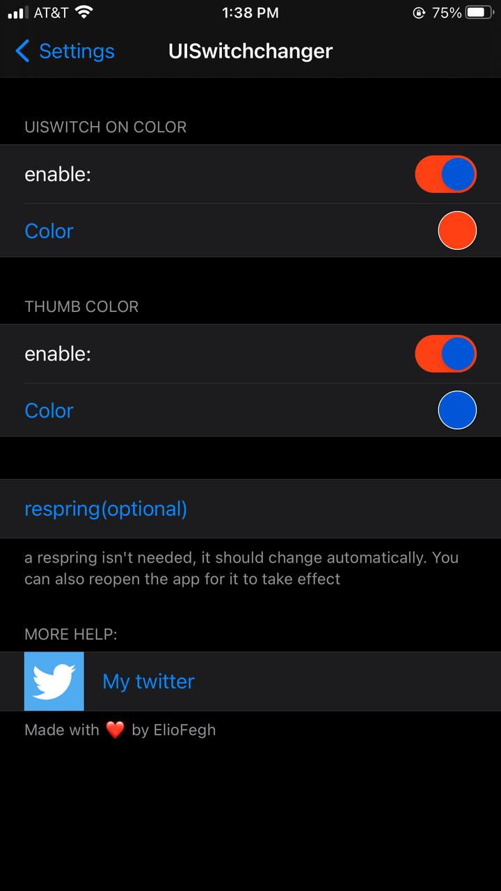

UISwitch changer
Compatibility
Compatible with iOS 12 --> iOS 14.8.1
Description
custom on switch color
custom thumb color
depends on alderis color picker
Screenshots/Videos

Changelog
1.0-initial release.